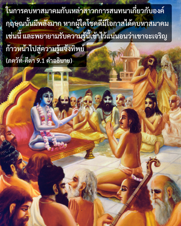

บุคลิกภาพสูงสุดแห่งพระเจ้าตรัสว่า อรฺชุน ที่รัก เนื่องจากเธอไม่เคยอิจฉาริษยาข้า ข้าจะถ่ายทอดความรู้อันลับสุดยอดและความรู้แจ้งนี้แด่เธอ เมื่อรู้แล้วเธอจะได้รับการปลดเปลื้องจากความทุกข์แห่งความเป็นอยู่ทางวัตถุ



เมื่อสาวกสดับฟังเกี่ยวกับองค์ภควานฺมากขึ้นก็จะได้รับแสงสว่างมากขึ้น วิธีการสดับฟังนี้ได้แนะนำไว้ใน ศฺรีมทฺ-ภาควตมฺ ดังนี้ “สาส์นจากบุคลิกภาพสูงสุดแห่งพระเจ้าเปี่ยมไปด้วยพลัง และพลังเหล่านี้รู้แจ้งได้ถ้าหากประเด็นต่างๆ ได้มีการสนทนากันเกี่ยวกับองค์ภควานฺในหมู่สาวก สิ่งเหล่านี้เราไม่สามารถที่จะบรรลุได้โดยการไปคบหาสมาคมกับนักคาดคะเนทางจิต หรือนักวิชาการทางโลกเนื่องจากเป็นความรู้แจ้ง”
สาวกปฏิบัติในการรับใช้องค์ภควานฺอยู่เสมอ พระองค์ทรงเข้าใจความรู้สึกนึกคิด และความจริงใจของแต่ละคนที่ปฏิบัติในกฺฤษฺณจิตสำนึก และพระองค์ทรงให้ปัญญาในการเข้าใจศาสตร์แห่งองค์กฺฤษฺณ ในการคบหาสมาคมกับเหล่าสาวกการสนทนาเกี่ยวกับองค์กฺฤษฺณนั้นมีพลังมาก หากผู้ใดโชคดีมีโอกาสได้คบหาสมาคมเช่นนี้ และพยายามรับความรู้นี้เข้าไว้แน่นอนว่าเขาจะเจริญก้าวหน้าไปสู่ความรู้แจ้งทิพย์ เพื่อส่งเสริม อรฺชุน ให้เจริญมากยิ่งขึ้นในการรับใช้อันมีพลังของพระองค์ ในบทที่เก้านี้องค์กฺฤษฺณทรงอธิบายเนื้อหาสาระที่ลับมากยิ่งขึ้นกว่าบทอื่นๆ ที่ทรงเปิดเผยไว้แล้ว
ในตอนต้นของ ภควัท-คีตา บทที่หนึ่งเป็นการแนะนำเกี่ยวกับหนังสือทั้งเล่ม บทที่สอง และบทที่สามอธิบายความรู้ทิพย์ เรียกว่า เป็นความลับ ประเด็นที่สนทนากันในบทที่เจ็ด และบทที่แปดสัมพันธ์กับการอุทิศตนเสียสละรับใช้โดยเฉพาะ เนื่องจากจะนำแสงสว่างแห่งกฺฤษฺณจิตสำนึกมาให้จึงเรียกว่าเป็นความลับยิ่งขึ้น แต่เรื่องราวที่อธิบายในบทที่เก้าเกี่ยวกับการอุทิศตนเสียสละที่บริสุทธิ์ โดยไม่มีสิ่งใดเจือปนจึงเรียกว่าเป็นความลับสุดยอด ผู้สถิตในความรู้ขั้นลับสุดยอดขององค์กฺฤษฺณเป็นทิพย์โดยธรรมชาติ ดังนั้น จึงไม่มีความเจ็บปวดทางวัตถุใดๆ ถึงแม้ว่าจะอยู่ในโลกวัตถุก็ตาม ในภกฺติ-รสามฺฤต-สินฺธุ ได้กล่าวไว้ว่า แม้ผู้ที่มีความปรารถนาอย่างจริงใจในการถวายการรับใช้ด้วยความรักต่อองค์ภควานฺจะสถิตอยู่ในระดับสภาวะทางวัตถุก็ยังถือว่าเขาผู้นี้หลุดพ้น ในทำนองเดียวกัน ใน ภควัท-คีตา บทที่สิบเราจะพบว่าผู้ใดที่ปฏิบัติเช่นนี้เป็นบุคคลที่หลุดพ้นแล้ว
โศลกแรกมีความสำคัญโดยเฉพาะคำว่า อิทํ ชฺญานมฺ (“ความรู้นี้”) หมายถึง การอุทิศตนเสียสละรับใช้ที่บริสุทธิ์ ซึ่งประกอบด้วยกิจกรรมต่างๆ เก้าอย่าง คือ การสดับฟัง การภาวนา การระลึกถึง การรับใช้ การบูชา การสวดมนต์ การปฏิบัติตาม การรักษามิตรภาพ และการศิโรราบทุกสิ่งทุกอย่าง จากการฝึกปฏิบัติเก้าวิธีแห่งการอุทิศตนเสียสละรับใช้เราจะพัฒนาไปสู่จิตสำนึกทิพย์ คือ กฺฤษฺณจิตสำนึก เมื่อหัวใจของเราใสสะอาดจากมลทินทางวัตถุ เราจะสามารถเข้าใจศาสตร์แห่งองค์กฺฤษฺณนี้ได้ เพียงเข้าใจว่าสิ่งมีชีวิตไม่ใช่เป็นวัตถุนั้นไม่เพียงพอ เพราะเป็นเพียงจุดเริ่มต้นแห่งความรู้แจ้งทิพย์เท่านั้น เราควรรู้ถึงข้อแตกต่างระหว่างกิจกรรมของร่างกาย และกิจกรรมทิพย์นอกเหนือไปจากที่เข้าใจว่าตัวเราไม่ใช่ร่างกาย
ในบทที่เจ็ดได้กล่าวถึงพลังอันมั่งคั่งของบุคลิกภาพสูงสุดแห่งพระเจ้า พลังงานต่างๆ ของพระองค์ เช่น ธรรมชาติเบื้องต่ำ ธรรมชาติเบื้องสูง และปรากฏการณ์ทางวัตถุนี้ทั้งหมด ในบทที่เก้าจะได้วิเคราะห์ถึงพระบารมีขององค์ภควานฺ
คำสันสกฤต อนสูยเว ในโศลกนี้มีความสำคัญมากเช่นกัน โดยปกติแล้วถึงแม้ว่านักวิจารณ์มีการศึกษาสูงมาก แต่ทุกคนมีความอิจฉาริษยาองค์ภควานฺ กฺฤษฺณ แม้แต่นักวิชาการผู้คงแก่เรียนที่สุดยังเขียน ภควัท-คีตา ผิดพลาดเป็นอย่างมาก เนื่องจากมีความอิจฉาริษยาที่มีต่อองค์กฺฤษฺณ คำวิจารณ์ของคนพวกนี้จึงไร้ประโยชน์ คำวิจารณ์ของเหล่าสาวกเป็นที่เชื่อถือได้ ไม่มีผู้ใดสามารถอธิบาย ภควัท-คีตา หรือให้ความรู้ขององค์กฺฤษฺณโดยสมบูรณ์ได้หากเขายังมีความอิจฉา ผู้ที่วิจารณ์บุคลิกขององค์กฺฤษฺณโดยไม่รู้จักพระองค์เป็นคนโง่ ดังนั้น คำวิจารณ์เช่นนี้ควรหลีกเลี่ยงเป็นอย่างยิ่ง สำหรับผู้ที่เข้าใจว่าองค์กฺฤษฺณ คือ องค์ภควานฺ ผู้ทรงมีบุคลิกภาพทิพย์และบริสุทธิ์ คำอธิบายจากบทเหล่านี้นั้นจะมีประโยชน์มาก